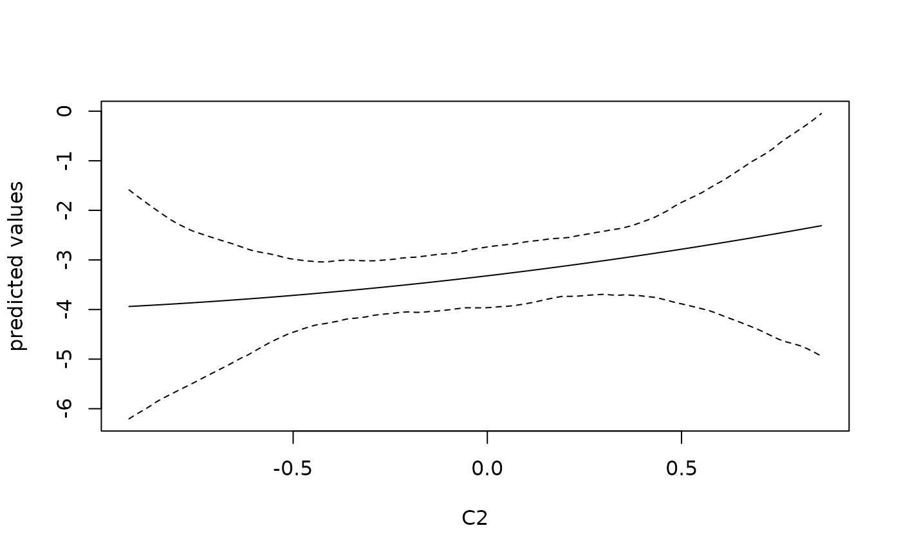

Obtains predictions and corresponding credible intervals from an object of class 'JointAI'.
object inheriting from class 'JointAI'
vector of variable names or integers identifying for which outcome(s) the prediction should be performed.
optional new dataset for prediction. If left empty, the original data is used.
quantiles of the predicted distribution of the outcome
the type of prediction. The default is on the scale of the linear
predictor ("link" or "lp"). Additionally, for generalized
linear (mixed) models (incl. beta and log-normal) type = "response"
transforms the predicted values to the scale of the response, and for
ordinal and multinomial (mixed) models type may be "prob" (to
obtain probabilities per class), "class" to obtain the class with
the highest posterior probability, or "lp". For parametric survival
models type can be "lp" or "response", and for proportional
hazards survival models the options are "lp", "risk" (=
exp(lp)), "survival" or "expected" (=
-log(survival)).
the first iteration of interest
(see window.mcmc)
the last iteration of interest
(see window.mcmc)
thinning interval (integer; see window.mcmc).
For example, thin = 1 (default) will keep the MCMC samples
from all iterations; thin = 5 would only keep every 5th
iteration.
optional vector of the index numbers of chains that should be excluded
logical; should messages be given? Default is
TRUE.
logical; should warnings be given? Default is
TRUE.
logical; should the full sample on which the summary (mean and quantiles) is calculated be returned?#'
currently not used
A list with entries dat, fit and quantiles,
where fit contains the predicted values (mean over the values
calculated from the iterations of the MCMC sample), quantilescontain the specified quantiles (by default 2.5% and 97.5%), and datis newdata, extended with fit and quantiles (unless
prediction for an ordinal outcome is done with type = "prob", in
which case the quantiles are an array with three dimensions and are
therefore not included in dat).
A model.matrix \(X\) is created from the model formula
(currently fixed effects only) and newdata. \(X\beta\) is then
calculated for each iteration of the MCMC sample in object, i.e.,
\(X\beta\) has n.iter rows and nrow(newdata) columns. A
subset of the MCMC sample can be selected using start, end
and thin.
So far, predict cannot calculate
predicted values for cases with missing values in covariates. Predicted
values for such cases are NA.
For repeated measures models prediction currently only uses fixed effects.
Functionality will be extended in the future.
# fit model
mod <- lm_imp(y ~ C1 + C2 + I(C2^2), data = wideDF, n.iter = 100)
# calculate the fitted values
fit <- predict(mod)
#> Warning:
#> Prediction for cases with missing covariates is not yet implemented.
#> I will report “NA” instead of predicted values for those cases.
# create dataset for prediction
newDF <- predDF(mod, vars = ~ C2)
# obtain predicted values
pred <- predict(mod, newdata = newDF)
# plot predicted values and 95% confidence band
matplot(newDF$C2, pred$fitted, lty = c(1, 2, 2), type = "l", col = 1,
xlab = 'C2', ylab = 'predicted values')
